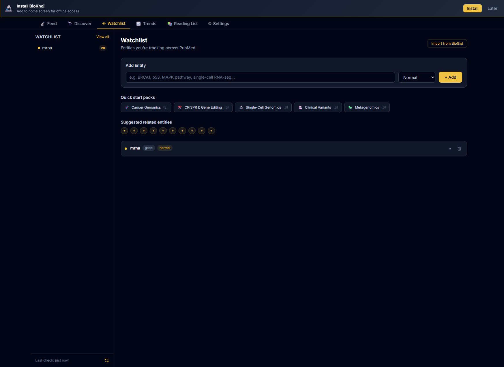
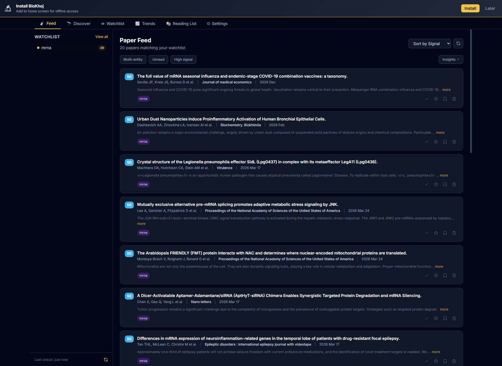
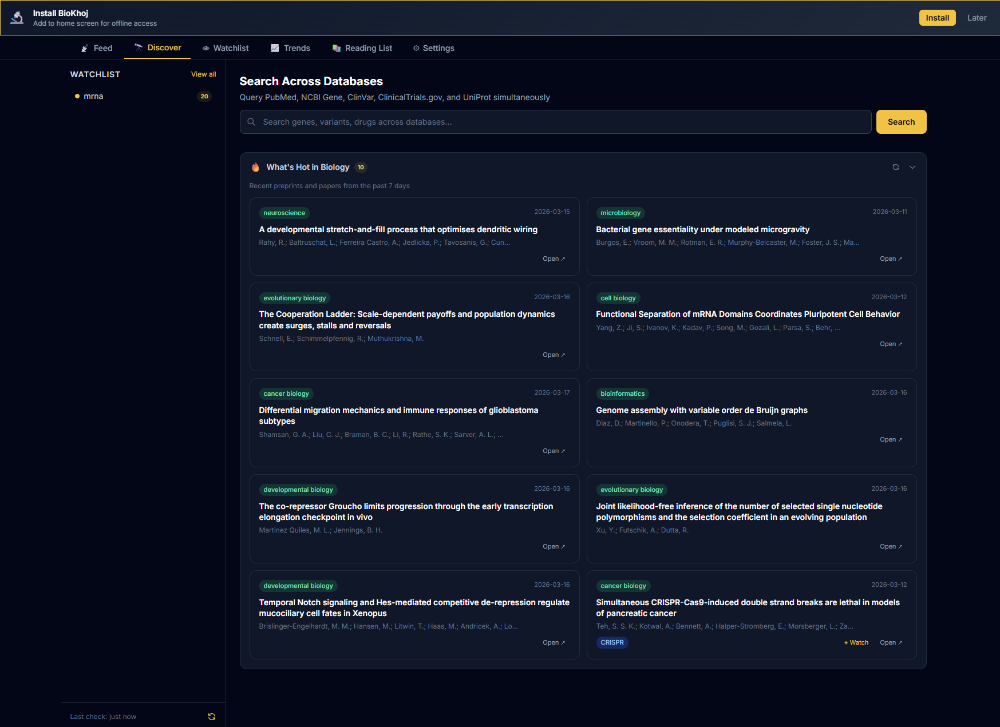
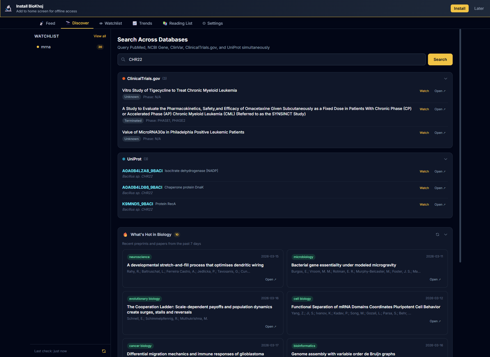
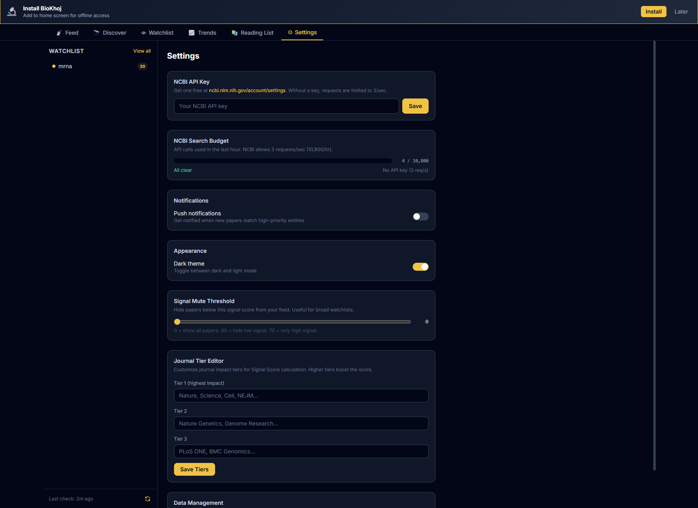
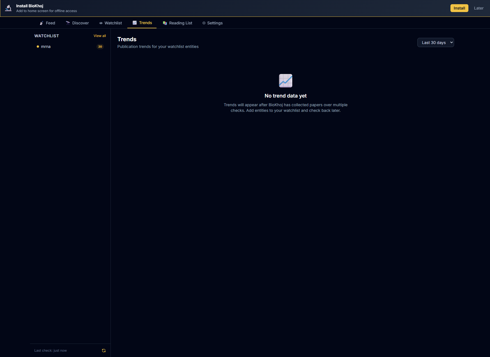
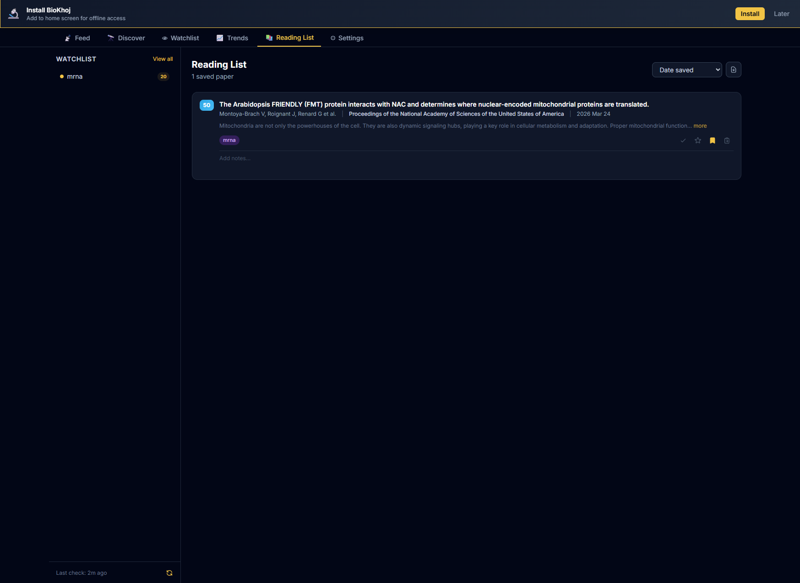

Your personal literature radar — track genes, pathways, diseases, and authors across the biomedical literature with intelligent signal scoring.
BioKhoj (from Hindi khoj, meaning "search" or "discovery") is a personal literature radar for biomedical researchers. It continuously monitors the published literature for topics you care about and surfaces the most relevant new papers using an intelligent Signal Score.
When you first open BioKhoj, you will see an empty watchlist. Here is how to get started in 60 seconds:
TP53 — BioKhoj auto-classifies it as a geneglioblastoma — classified as a diseaseYour watchlist is the core of BioKhoj. Each entry is a biomedical concept you want to track.

Each watchlist entity can be assigned a priority level that affects how papers are scored:
| Priority | Indicator | Effect on Signal Score |
|---|---|---|
| High | !!! | +10 bonus to entity match component |
| Normal | !! | Standard scoring (default) |
| Low | ! | Entity match component scaled to 50% |
Use high priority for your primary research focus and low priority for tangentially related topics you want to keep an eye on.
Tag entities with custom labels (e.g., thesis, grant-R01, collab-smith-lab) to organize your watchlist. Tags are used for:
Pause — temporarily pause an entity to exclude it from feed queries without removing it. Paused entities appear dimmed in the watchlist and can be resumed at any time.
Auto-classification — when you add an entity, BioKhoj automatically classifies it into one of these types:
| Type | Examples | Detection |
|---|---|---|
| Gene | BRCA1, TP53, EGFR | Matches HGNC symbol patterns |
| Disease | glioblastoma, ALS, COPD | MeSH disease terms |
| Pathway | mTOR signaling, Wnt pathway | Known pathway names |
| Drug | olaparib, pembrolizumab | Known drug names |
| Organism | zebrafish, Arabidopsis | NCBI taxonomy terms |
| Method | CRISPR, scRNA-seq | Common method keywords |
| Custom | anything else | Free text query |
You can override the auto-classification by clicking the type badge and selecting a different type.
BioKhoj queries multiple sources to find papers related to your watchlist entities:
BRCA1[Gene] AND human[Organism])Results are deduplicated by DOI/PMID, merged, and scored. The feed updates when you click Refresh or on the schedule configured in Settings.

Every paper in the feed shows a Signal Score badge indicating its relevance to you:
| Badge | Score Range | Meaning |
|---|---|---|
| 85 | 70 – 100 | High signal — highly relevant, recent, well-cited, or novel co-mention |
| 52 | 40 – 69 | Normal signal — moderately relevant, worth a glance |
| 23 | 0 – 39 | Low signal — tangential match, older paper, or low-tier journal |
Click the badge to see the full score breakdown for that paper.


The feed toolbar is the primary control row above the paper list. It contains three filter toggle buttons and an Insights dropdown:
All three filters are composable — enable any combination to narrow your feed. The "Insights" dropdown (right side of the toolbar) provides four actions:
Two dedicated toggle buttons in the feed toolbar let you quickly focus on what matters:
Both filters compose with the Multi-entity co-mention filter, so you can apply all three simultaneously to find unread, high-signal, cross-topic papers.
Each paper card in the feed shows a 180-character abstract preview followed by a "more" link. Click "more" to expand the full abstract inline beneath the paper title. Click "less" to collapse it back to the preview. This replaces the old hover tooltip and works better on touch devices and narrow screens.
On desktop, the sidebar displays your watchlist entities with colored activity dots that reflect real-time feed state:
| Dot Color | Meaning |
|---|---|
| Purple (pulsing) | High-signal unread papers (≥70) for this entity |
| Saffron | New papers found since last check, but none high-signal |
| Grey | Up to date — no new papers |
The dots update after each feed refresh. The purple pulse animation draws attention to entities with the most actionable new results.
The Signal Score is a composite score from 0 to 100 that ranks papers by how relevant and important they are to your research. It is computed from six weighted components:
| Component | Range | How It Works |
|---|---|---|
| Recency | 0 – 25 | Exponential decay based on publication date. Papers published today score 25; papers from 7 days ago score ~18; 30 days ~10; 90 days ~3; older than 1 year ~0. Preprints get a small recency bonus since they represent the latest findings. |
| Citation Velocity | 0 – 20 | Citations per month since publication, normalized against the field average. A paper with 10 citations in its first month in a field averaging 2/month scores high. Data from OpenAlex. New papers (<30 days) use Altmetric attention score as a proxy when available. |
| Journal Tier | 0 – 15 | Based on the journal's configured tier (see Settings). Tier 1 (Nature, Science, Cell) = 15; Tier 2 (PNAS, eLife, Genome Research) = 10; Tier 3 (field-specific journals) = 6; Unranked = 3; Preprint servers = 5. |
| Co-mention Novelty | 0 – 20 | Measures how novel it is for two of your watchlist entities to appear together in the same paper. If BRCA1 and mTOR rarely co-occur in the literature but this paper discusses both, the novelty score is high. Computed from historical co-occurrence frequency via OpenAlex concept co-occurrence data. |
| Entity Match | 0 – 10 | How many of your watchlist entities the paper mentions, weighted by priority. A paper matching 3 high-priority entities scores 10; a paper matching 1 low-priority entity scores ~2. |
| Author Reputation | 0 – 10 | Bonus for papers by authors you are tracking (see Author Tracking) or authors with high h-index in the field. Watched authors get a flat +7 bonus. Other authors are scored by their OpenAlex citation metrics. |
| Threshold | Label | Notification |
|---|---|---|
| ≥70 | High Signal | Desktop notification (if enabled), badge count on extension icon |
| 40–69 | Normal Signal | Appears in feed, no notification |
| <40 | Low Signal | Hidden by default (show via filter toggle) |
You can customize these thresholds in Settings.
The Signal Mute Threshold is a slider in Settings (range 0–80) that hides all papers scoring below your chosen cutoff from the feed. Unlike the high-signal filter toggle (which shows only ≥70), the mute threshold is a persistent baseline — papers below it never appear in your feed at all.
When a mute threshold is active, the feed subtitle shows the active value (e.g., "Muted below 30"). Set it to 0 to see everything, or raise it to 20–40 to suppress noise from tangential matches. The threshold does not affect papers already saved to your reading list.

BioKhoj can suggest related concepts to expand your watchlist coverage. When enabled, it uses:
Suggestions appear in a "Suggested" section below your watchlist with a brief rationale for each.
Each suggestion has an "+ Add" button. Click it to instantly add the concept to your watchlist with auto-classification. Click "Dismiss" to hide the suggestion permanently.
A co-mention alert fires when a paper discusses two or more of your watchlist entities together in a way that is statistically unusual based on historical co-occurrence data.
For example, if your watchlist contains BRCA1 and ferroptosis, and a new paper discusses both, BioKhoj flags this as a co-mention alert because these two concepts rarely appear together in the literature — this could represent a novel research direction.
BioKhoj computes novelty by comparing the observed co-occurrence count against the expected count based on each entity's individual frequency:
Co-mention alerts appear with a CO-MENTION badge in the feed and contribute to the Signal Score's co-mention novelty component.
| Entity A | Entity B | Why It Is Flagged |
|---|---|---|
| BRCA1 | ferroptosis | DNA repair gene + cell death pathway is an emerging intersection |
| TP53 | gut microbiome | Tumor suppressor + microbiome is a novel cross-domain link |
| CRISPR | prion disease | Gene editing + rare neurodegeneration is an uncommon pairing |
The Trends view shows publication volume over time for each watchlist entity:

Trend data is fetched from OpenAlex and cached locally for 24 hours.
Above the trend charts, BioKhoj displays a text-based insights summary box with four data points:
The summary refreshes whenever trend data is recalculated and provides a quick narrative you can scan before diving into the charts.
Save any paper from the feed to your Reading List for later reading. Your reading list is stored locally and persists across sessions.

Add specific authors to your watch list to get notified when they publish new papers:
When a watched author publishes a new paper, it appears in your feed with an WATCHED AUTHOR badge and receives a +7 bonus to the Author Reputation component of its Signal Score. If notifications are enabled, you will get a desktop notification.
| Format | Use Case |
|---|---|
| BibTeX | Import into LaTeX reference managers, Zotero, Mendeley |
| RIS | Import into EndNote, RefWorks, Papers |
| Markdown | Paste into notes, READMEs, or lab notebooks |
| CSV | Standard CSV with title, authors, DOI, journal, date, Signal Score, and tags |
| pandas DataFrame | Copy a pd.DataFrame(...) snippet ready to paste into a Jupyter notebook |
| R tibble | Copy a tibble(...) snippet ready to paste into RStudio |
| Watchlist JSON | Back up your watchlist or share it with collaborators |
| Weekly Digest | A formatted summary of the past week's high-signal papers, suitable for email or Slack |
| Setting | Description |
|---|---|
| NCBI API Key | Optional. Increases PubMed rate limit from 3 req/s to 10 req/s. Get one free at NCBI. |
| Notifications | Enable/disable desktop notifications for high-signal papers and co-mention alerts. Configure notification threshold (default: 70). |
| Journal Tiers | Customize journal tier assignments. BioKhoj ships with a default tier list; you can promote, demote, or add journals. |
| Theme | Switch between dark mode and light mode. |
| Feed refresh | Configure automatic refresh interval: manual only, every 6 hours, every 12 hours, or daily. |
| Score thresholds | Customize the boundaries for high/normal/low Signal Score badges (defaults: 70, 40). |
| Cache duration | How long API results are cached locally (default: 24 hours). |
| Max feed size | Maximum number of papers to keep in the feed (default: 500). |
| Signal mute threshold | Slider (0–80) that persistently hides papers scoring below the cutoff from the feed. Set to 0 to see everything. See Signal Mute Threshold for details. |
If you use BioGist (the entity scanner extension), you can import detected entities directly into your BioKhoj watchlist:
Both extensions use a shared entity format, so entities transfer cleanly between them. Pinned entities in BioGist are imported as high-priority watchlist entries.
| Action | Shortcut |
|---|---|
| Toggle BioKhoj (extension) | Ctrl+Shift+K |
| Refresh feed | Ctrl+Shift+R (within BioKhoj) |
| Add entity | Ctrl+Shift+A (within BioKhoj) |
| Search feed | / (within BioKhoj) |
| Navigate papers | j / k (down / up) |
| Open paper | Enter or o |
| Save to reading list | s |
| Switch tabs (extension popup) | 1 Feed · 2 Watchlist · 3 Trends · 4 Reading List |
| Switch tabs (full page) | 1 Feed · 2 Watchlist · 3 Trends · 4 Reading List · 5 Settings |
| Multi-select papers | Shift+click — select a range of papers for bulk tagging or export |
| Close modals / popovers | Escape |
BioKhoj ships with 5 curated starter packs to help you bootstrap a watchlist quickly. Each pack contains 6–8 hand-picked entities relevant to a major research area. Open the Watchlist tab and click a pack to import all its entities in one click. Available packs:
Preset packs are auto-hidden once your watchlist has more than 5 entities, keeping the interface clean. You can always re-access them from Settings.
Toggle the "Multi-entity" button in the feed toolbar to filter the feed down to papers that mention 2 or more of your watched entities. This filter composes with the Unread and High Signal toggles — enable all three to find unread, high-signal papers bridging multiple topics. This is exactly the kind of cross-domain work that is easy to miss with single-keyword searches.
Click "Share" in the feed toolbar to copy a shareable URL containing your entire watchlist encoded in the URL hash. Anyone who opens the link will be prompted to import the entities (deduplicated against their existing watchlist). No server is involved — the watchlist data is encoded directly in the URL fragment, so it works entirely client-side.
Hold Shift and click papers in the feed to multi-select them. A "Tag selected" button appears in the toolbar. Click it to apply a tag (e.g., methods to read, thesis chapter 3) to all selected papers at once. This is much faster than tagging papers one by one when triaging a large batch of new results.
On app open, BioKhoj checks whether any paper in your reading list has gained 5 or more new citations since the last check. If so, it shows a toast notification with the paper title and the citation spike count. This helps you spot papers that are suddenly gaining traction in the community — a potential signal that the work is being validated or sparking follow-up research.
The reading list export dropdown now includes three additional formats alongside BibTeX, RIS, and Markdown:
pd.DataFrame(...) snippet ready to paste into a Jupyter notebooktibble(...) snippet ready to paste into RStudioAll clipboard formats copy directly to your clipboard — just paste into your analysis environment.
The Settings tab shows a visual progress bar of NCBI API calls used in the last hour. It is color-coded: green when under 50% usage, amber at 50–80%, and red above 80%. The bar also displays your current rate limit (3 req/s without an API key, 10 req/s with one) and the remaining budget. It auto-refreshes every 5 seconds while the Settings tab is open.
When you have been away for more than 1 day, BioKhoj automatically fetches papers you missed. It queries in 7-day windows, going back up to 30 days maximum. A progress bar shows the catch-up status, and a "Welcome back" banner offers three options:
For Chrome extension users, BioKhoj adds context menu actions for quick interactions:
BioKhoj — your personal literature radar for biomedical research.
Built by Oric Labs. Part of the BioLang ecosystem.
Report issues or request features: GitHub Issues
BioKhoj is designed for researchers, bioinformaticians, and graduate students who want to stay on top of the literature without manually checking PubMed every day. It brings the most relevant papers to you, scored and ranked by what matters to your specific research interests.